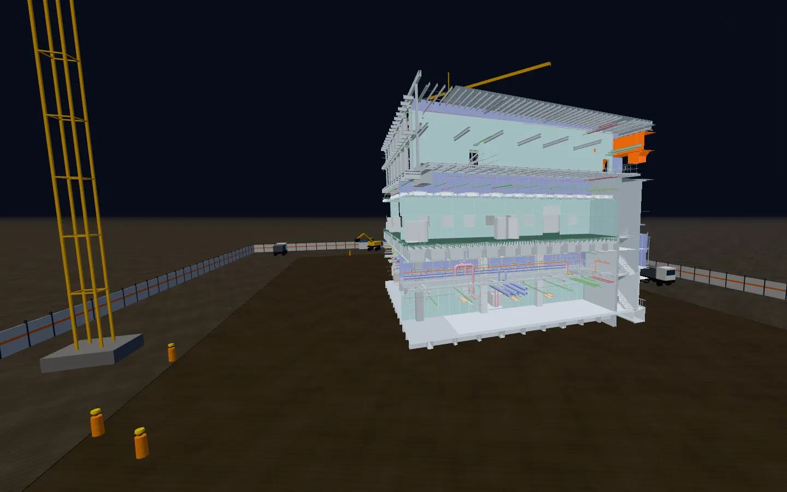

Scroll buildTap buildDrag rotate Pinch or ± zoomHover a part
1 / 25
Scroll to buildTap a system to build
Level
Door
Where are you going?
Controls

The 3D layer
Open this page on a laptop or desktop to watch it assemble floor by floor.
Loading…